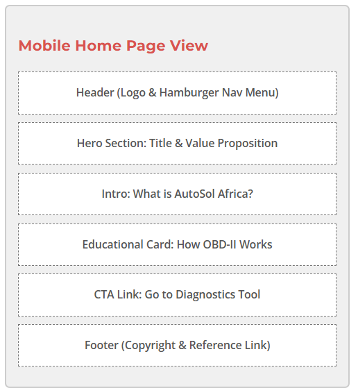
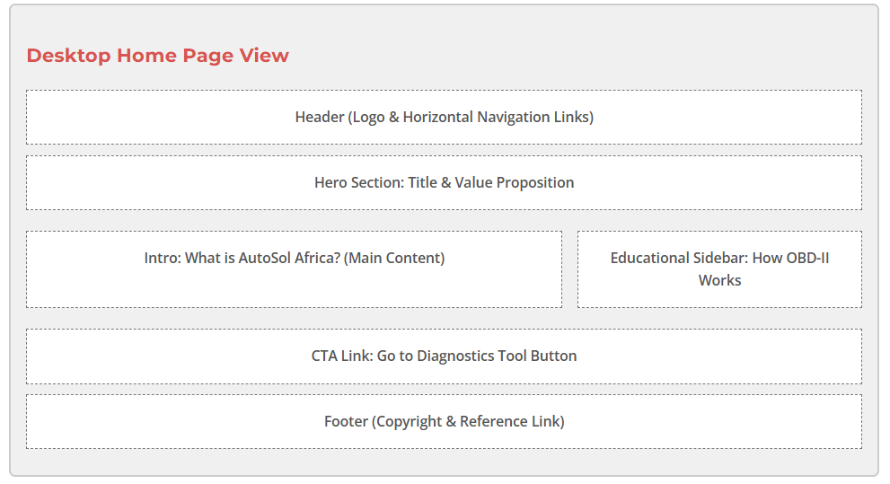

Site Name
Name: AutoSol Africa @autosolafrica.com.ng available soon.
Description: The name blends "Automotive" and "Solutions" with our target market, "Africa". It signifies smart, accessible, and digital diagnostic answers tailored explicitly for African drivers and local workshop mechanics.

Site Purpose
The purpose of AutoSol Africa is to bridge the gap between complex digital vehicle data and car owners/mechanics. The site serves as an interactive educational hub by offering:
- Clear explanations of generic OBD-II error codes.
- Localized vehicle maintenance insights addressing real-world driving conditions (e.g., dust, road quality, fuel consistency).
- An interactive tool to quickly search and decrypt Diagnostic Trouble Codes (DTCs).
- A visual, simulated dashboard showing live engine data properties (temperature, battery, fuel) to introduce users to basic vehicle electronics.
Target Audience Scenarios
Our key target audiences include everyday car owners trying to avoid exploitation, and apprentice mechanics looking to sharpen their digital diagnostic skills.
Scenario 1: The Everyday Driver
"My check engine light just came on while driving. A roadside mechanic plugged in a scanner and told me it's a 'P0300' code but wants to charge an outrageous fee to fix it. What does this code actually mean, and is my car safe to drive back home?"
Scenario 2: The Aspiring Auto-Electrician / Mechanic
"I am learning car diagnostics in a workshop, but standard apps are confusing and hard to read. Where can I find a clear blueprint or interactive dashboard simulator that shows how coolant temperature or voltage drops behave during healthy engine operation?"
Color Schema
The chosen palette balances modern, trustworthy software aesthetics with traditional mechanical workshop warning cues:
Navigation, Headings, Trust
Error Codes, Buttons, Warnings
System OK, Cleared Codes, Success Alerts
Body Text, High Contrast
Typography
- Heading Font:
'Montserrat', sans-serif— Bold, geometric, and modern layout structure for branding and titles. - Body Font:
'Open Sans', sans-serif— High readability, clean, and professional look for code definitions and data lists.
Wireframes Layout
The page is to contain detailed information about the UI/UX of AutoSol Africa as a Brand

